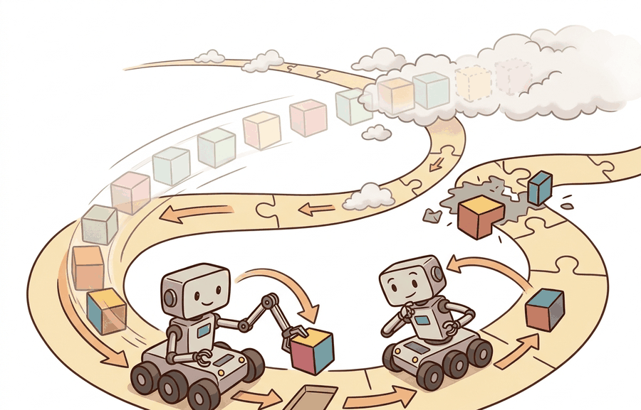

"MPC commits to the first step of a plan it will never finish, because the plan is not the point; the planning is."
A Receding-Horizon Optimist

Model predictive control (MPC) as receding-horizon optimization is one lens on Control for AI Practitioners. We study it because an embodied agent needs decisions that survive contact with noisy sensors, delayed effects, and changing environments.
This section develops the technical contract for Model predictive control (MPC) as receding-horizon optimization into a usable mental model. First we define the object of study, then we connect it to the agent loop, then we test it with a compact implementation.
The key question in Model predictive control (MPC) as receding-horizon optimization is practical: what must the agent know, what can it observe, what action is available, and what evidence shows that the action worked under the stated conditions?
A representation earns its place when it changes the measurable action interface. In Model predictive control (MPC) as receding-horizon optimization, the reader should keep asking which decision becomes easier, safer, or more reliable.
Theory
For Model predictive control (MPC) as receding-horizon optimization, the practical design rule is to make the interface inspectable before optimization begins: inputs, outputs, units, latency, bounds, and failure labels should all be visible in the saved artifact.
MPC has been deployed in production embodied systems across a wide range of timescales and constraint types: Boston Dynamics uses receding-horizon whole-body MPC on Spot and Atlas to satisfy joint torque limits and foot-contact force constraints at roughly 500 Hz; Tesla's Autopilot path tracker uses a kinematic MPC with a 2-second horizon to stay within lane boundaries; and SpaceX's Falcon 9 landing controller solves a convex fuel-optimal MPC problem in real time during the final descent phase. Each deployment shares the same structure: the optimizer is the mechanism that enforces constraints, and the receding horizon is the mechanism that recovers from model error. MPC solves a short planning problem at every control tick, executes only the first command, then replans after the next observation. This receding horizon is valuable when constraints matter: actuator limits, collision margins, contact forces, battery limits, joint limits, and comfort bounds can be written directly into the optimization. The cost encourages progress, while the constraints define what the robot is not allowed to buy with that progress.
Use MPC when at least one of the following is true: (1) hard constraints on inputs or states must never be violated (joint limits, collision margins, battery thresholds); (2) the system is naturally nonlinear or operates far from a single operating point, making a fixed linear gain unreliable; or (3) preview information is available (a reference trajectory, a map of upcoming terrain) that a memoryless controller cannot exploit. PID and LQR are faster per tick and simpler to tune; prefer them when none of those three conditions apply. For horizon length, a rule of thumb is to choose $H$ so that the open-loop prediction covers at least one dominant time constant of the plant. Longer horizons improve constraint handling but increase solve time quadratically for QP-based formulations.
An MPC controller that finds an excellent plan after the deadline has still failed the control loop. Log solve time, solver status, warm-start quality, infeasibility reason, and the fallback command. The fallback is part of the controller, not an afterthought.
The mechanism in Model predictive control (MPC) as receding-horizon optimization is the contract between representation and action. Name what enters the module, what leaves it, which assumptions make that transformation valid, and which log would reveal a bad handoff.
Worked Example
MPC solves a finite-horizon optimization at every tick, executes only the first command, then replans. Code Fragment 7.5.1 implements this on a 1D double integrator (state \([\text{pos},\text{vel}]\), control = acceleration). Each tick minimizes \(\sum_{k=0}^{N}\lVert x_k - x_d\rVert_Q^2 + \lVert u_k\rVert_R^2\) subject to the discrete dynamics and a hard acceleration limit \(\lvert u\rvert \le 1.5\). The previous solution is shifted forward as a warm start, which is what keeps the per-tick solve fast enough to meet a control deadline.
import numpy as np
from scipy.optimize import minimize
# 1D double integrator: state [pos, vel], control = acceleration. Drive to x_d.
dt, N = 0.1, 15 # horizon length
A = np.array([[1, dt], [0, 1.0]])
B = np.array([0.5 * dt * dt, dt])
x_d = np.array([1.0, 0.0])
Qx, Qv, Ru = 10.0, 1.0, 0.1
u_lim = 1.5 # acceleration constraint
def rollout(u_seq, x0):
x, xs = x0.copy(), [x0.copy()]
for u in u_seq:
x = A @ x + B * u; xs.append(x)
return np.array(xs)
def cost(u_seq, x0):
e = rollout(u_seq, x0) - x_d
return Qx * np.sum(e[:, 0] ** 2) + Qv * np.sum(e[:, 1] ** 2) + Ru * np.sum(u_seq ** 2)
def mpc_step(x0, warm):
res = minimize(cost, warm, args=(x0,), method="SLSQP",
bounds=[(-u_lim, u_lim)] * N, options={"maxiter": 50, "ftol": 1e-6})
return res.x, res.success
x, warm, solves_ok = np.array([0.0, 0.0]), np.zeros(N), 0
for t in range(40): # closed-loop receding horizon
u_seq, ok = mpc_step(x, warm)
solves_ok += int(ok)
u0 = float(np.clip(u_seq[0], -u_lim, u_lim)) # execute only the first command
x = A @ x + B * u0
warm = np.r_[u_seq[1:], 0.0] # shift solution for the warm start
print(f"feasible solves: {solves_ok}/40")
print(f"final state pos={x[0]:.3f} vel={x[1]:+.3f} (target pos=1.000 vel=0.000)")The fragment should expose horizon, dynamics, cost, constraints, solver status, and first action. CasADi, do-mpc, OSQP, and Drake are useful when the small optimization already explains its command.
Practical Recipe
- Write the observation, action, and success metric before choosing a model.
- Build a baseline that is simple enough to debug by inspection.
- Add the library implementation only after the baseline behavior is understood.
- Record failures as structured cases: perception error, state error, planning error, control error, or evaluation error.
- Run at least one perturbation test before trusting the result.
The common mistake in Model predictive control (MPC) as receding-horizon optimization is to celebrate the component score before checking the closed-loop handoff. The failure usually appears at the boundary: stale state, wrong frame, delayed action, saturated actuator, or metric that ignores the real task cost.
A robotics team using Model predictive control (MPC) as receding-horizon optimization should log not only final success, but intermediate observations, chosen actions, controller status, and recovery events. The logs reveal whether the method is solving the task or merely passing the easiest episodes.
For model predictive control (mpc) as receding-horizon optimization, the useful test is simple: could a teammate point to the log line, plot, or trace that proves the idea changed the agent's next action?
For Model predictive control (MPC) as receding-horizon optimization, treat frontier claims as hypotheses until they expose enough detail to reproduce the result: data boundary, embodiment, controller interface, evaluation panel, and failure cases.
Can you name the observation, state estimate, action, success metric, and most likely failure mode for Model predictive control (MPC) as receding-horizon optimization? If not, the system boundary is still too vague.
Production Pattern
Model predictive control (MPC) as receding-horizon optimization sits inside the Part II robotics contract: geometry defines where things are, kinematics defines what motion is possible, dynamics defines what motion costs, control defines how errors are corrected, and sensing defines what the agent can know on time.
For MPC, log horizon, constraints, solver status, warm start, and missed-deadline behavior. This makes the section useful to students, builders, and researchers at the same time: the idea has an intuitive role, a formal interface, a runnable check, and a failure mode that can be reproduced.
For Model predictive control (MPC) as receding-horizon optimization, control closes the loop between estimated state and action. Keep reference, measured state, error signal, control law, actuator limits, and safety fallback separate in the evidence record.
| Tool or Library | What It Handles | Verification Check |
|---|---|---|
| python-control | analyzes linear systems, transfer functions, state-space models, and feedback loops | Verify units, sample time, poles, stability margin, and reference scaling. |
| CasADi | formulates optimization-based controllers with constraints and horizons | Verify constraints, warm start, solver status, and deadline behavior. |
| Drake | models dynamical systems, multibody plants, optimization, and controllers | Verify scalar type, plant finalization, frame convention, and solver status. |
| do-mpc | formulates optimization-based controllers with constraints and horizons | Verify constraints, warm start, solver status, and deadline behavior. |
| ROS 2 control | supports practical work on Model predictive control (MPC) as receding-horizon optimization | Verify the library output against the hand-built baseline on one small case. |
Use this recipe when turning Model predictive control (MPC) as receding-horizon optimization into code, a simulator experiment, or a robot diagnostic. The point is not to use every library. The point is to keep the hand-built baseline and the maintained-tool path comparable.
- Write the control objective, measured state, actuator command, update rate, and saturation policy.
- Run a step-response test before adding learning, with overshoot, settling time, and steady-state error logged.
- Compare the hand controller with python-control, CasADi, Drake, do-mpc, or ROS 2 control on the same plant model.
- Record latency, missed deadlines, saturation events, constraint violations, and recovery actions.
- Only compare controllers and policies when they share sensors, action limits, disturbance tests, and safety checks.
For Model predictive control (MPC) as receding-horizon optimization, compare methods only through one saved artifact that preserves the inputs, outputs, units, timestamps, latency budget, configuration, seed, metric definition, and failure labels relevant to this section. The comparison is meaningful only when the same script evaluates the same panel.
Extend the section exercise by adding one perturbation specific to Model predictive control (MPC) as receding-horizon optimization and one latency or uncertainty check. Save the result in the EvidenceRecord schema, then explain which library output you trust and why.
A learned policy can hide an MPC timing failure until the disturbance changes. Check horizon length, model mismatch, constraint scaling, solver status, missed deadlines, warm start, and fallback behavior before scaling training. For this section, first reproduce one tiny receding-horizon case by hand, then rerun it through CasADi, do-mpc, or Drake. If the two disagree, inspect dynamics discretization, constraint units, terminal cost, and the command actually executed after replanning.
Technical Core
Model predictive control (MPC) as receding-horizon optimization needs a topic-native core: variables, equations or system contracts, an algorithmic procedure, an expected output, and a failure diagnosis. Figure 7.5.T summarizes the chain this section must preserve when moving from a teaching example to a real embodied system.
MPC solves $\min_{u_{0:H-1}}\sum_{k=0}^{H-1}\ell(x_k,u_k)+\ell_f(x_H)$ subject to $x_{k+1}=f(x_k,u_k)$, $x_k\in\mathcal X$, and $u_k\in\mathcal U$. After solving, the robot executes only $u_0$, observes the new state, shifts the horizon, and solves again.
- Define the reference, measured state, error signal, actuator command, update rate, and saturation policy.
- Run a step or disturbance response before adding learning.
- Log overshoot, settling time, steady-state error, latency, saturation, and recovery behavior.
- Compare PID, LQR, or MPC only under the same plant, sensors, limits, disturbance panel, and metric code.
| Contract Field | What To Specify | Why It Matters |
|---|---|---|
| State and observation | Variables, units, timestamps, frames, and uncertainty. | Prevents a model score from being mistaken for robot capability. |
| Action interface | Command type, limits, update rate, and safety fallback. | Makes the learned or planned output executable. |
| Evidence artifact | Trace, metric, configuration, seed, and failure label. | Allows baseline and library path to be compared in one pass. |
| Tool path | python-control, CasADi, do-mpc, Drake, ROS 2 control, MuJoCo | Shows the practical library route after the mechanism is understood. |
For Model predictive control (MPC) as receding-horizon optimization, expected output is a trace where the relevant error decreases, overshoot stays within the design bound, and actuator commands remain within limits under the stated timing budget.
Model predictive control (MPC) as receding-horizon optimization should be stress-tested under delay, integral windup, actuator saturation, unmodeled friction, and reference-frame mismatch before the nominal trace is trusted.
Section References
Core references for Model predictive control (MPC) as receding-horizon optimization: Modern Robotics; Murray, Li, and Sastry; Siciliano et al.; LaValle; and official documentation for Drake, MuJoCo, Pinocchio, CasADi, python-control, GTSAM, ROS 2, and OpenCV as applicable.
Use these references to check notation, frame conventions, units, solver assumptions, and maintained-library behavior.
Model predictive control (MPC) as receding-horizon optimization is useful when it makes the perception-action loop more reliable, not when it merely adds a more impressive model name.
Design a method-matched experiment for Model predictive control (MPC) as receding-horizon optimization. Specify the environment, observations, actions, metric, one perturbation, and the library output you would compare against the hand-built baseline.